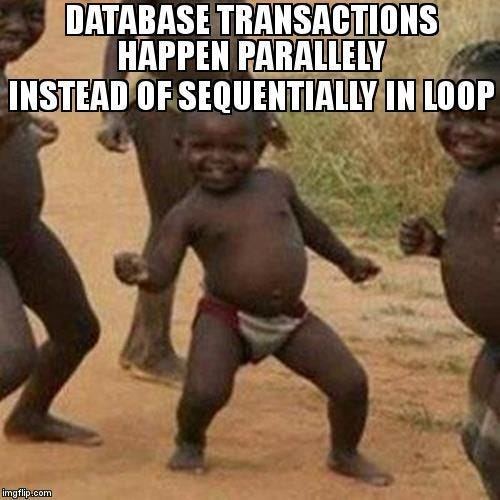
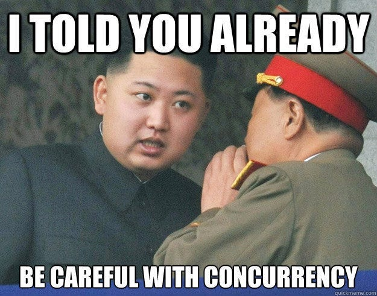
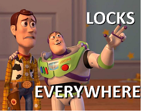

Concurrency is inevitable while designing high-performance enterprise software. Concurrency is a great tool to perform multiple operations in parallel and utilise the hardware to its limit. Yes! concurrency is cool but it is a double-edged sword. With concurrency, comes great power as well as great responsibility. You need to ensure that two parallel operations do not access the same resource without locks or mutex or they should not run in race condition etc.
Let's understand it in terms of a database, where two threads (or even processes) try to hit the same database which can lead to dirty reads. But you can argue, ‘ there is a thing called TRANSACTIONS. Don’t you know that ?‘. Well you are right, but transactions can collide internally depending on what policy of transaction isolation you have used in the database.
Let's discuss what is transaction isolation and its different types.
What is Transaction isolation?
A transaction is a sequence of multiple database operations bundled as a single operation. If any of the operations fail in between, a transaction can roll back completely as if it has never touched the database. If there are multiple concurrent transactions running on a database, they need to be isolated from each other to ensure ACID (atomicity, consistency, isolation, and durability) properties. This is called Transaction isolation.
There are four levels of transaction isolation
- Read uncommitted
- Read committed
- Repeatable read
- Serialized
Each level offers something different from the other so let's discuss them one by one.
Read uncommitted
At this level, a transaction can read records (or value) from databases which are not yet committed ie. a record which is modified by a transaction around the same time can be read by another transaction even if first transaction is not committed yet.
Assume Transaction A and B both are running in parallel. Transaction A can perform a read operation to fetch social media view count in one operation which can return an uncommitted value 367 as Transaction B has increased the count from 360 to 367 a few microseconds earlier but it is not committed yet. After some time, Transaction B fails and rolls back (follower count is 360 now) due to some reason whereas Transaction A is still running. Now if Transaction A performs some logic on view count, it will on a ghost (false) value of 367. This is called dirty read.

Pros and cons
At this level, transactions are fastest in execution as there are fewer checks to be run on the database but it offers the least degree of isolation and dirty read is a problem.
Recommendation
This level is recommended in systems where you need performance and can afford ghost values for a while which can be corrected later on. For example, views on social media videos.
Read Committed
At this level, a transaction can read records from databases that are committed ie. A record is modified by a transaction around the same time and can be read by another transaction only if the first transaction is committed. Dirty reads cannot happen at this level.
Assume Transaction A and B both are running in parallel. Transaction B is writing user comments on a social media post. Transaction A can perform a read operation to fetch comments of that post which returns only the committed comments by Transaction B at a given moment. So ghost values can not appear at this isolation level. But it’s not PERFECT as two consecutive read operations by a transaction can give different results if the record has been committed in between those reads. This is an inconsistent repeated reads issue.
Pros and cons
At this level, transactions are slower than read uncommitted (but faster than other levels) in execution as only committed value is read. Dirty reads are not there but inconsistent repeated reads are a problem. Though it offers a higher degree of isolation than the previous level.
Recommendation
This level is recommended in systems where you want to avoid dirty reads and still expect performance (a little less than read uncommitted). For example, comments on social media posts.
Repeatable reads
At this level, a transaction can read records from databases that are committed and creates a local copy of it within the transaction scope ie. A record is read by a transaction only if it is committed and a local copy is made which will be used by this transaction during its lifetime even if some other transaction changes that record and commit, it will not affect the local copy (snapshot)of the first transaction. Dirty reads and inconsistent repeated reads cannot happen at this level.
At the end of transactions, your snapshot may be outdated. So you can resolve this contingency by using the latest commit via timestamp or version.
Don’t expect an example now. Please! The writer is human not ChatGPT 😉
Pros and cons
At this level, transactions are slower than in prior levels but it is definitely a higher level of isolation as it avoids dirty and inconsistent repeated reads.
But phantom reads can be an issue. What the hell is that, let's discuss. Assume transaction A has an aggregation query Q which returns the total number of booked seats in a cinema hall as 30 where as in transaction B, a new user has booked 3 seats, and after this transaction, A again queries Q which will result in 33 shockingly. This is called phantom reads and such scenarios cannot be taken care of by repeatable reads.

Recommendation
This is recommended in a system where you cannot afford dirty reads and inconsistent repeated reads, your logic requires repeated reads to be consistent. later on, you can use an approach like Optimistic concurrency control (leave a comment if you want an article on this) to avoid conflicts.
Serializable
This is the highest level of isolation level where all transactions are performed serially without conflicting with each other. This level eliminated the problem of phantom reads.

Pros and cons
This is slowest in performance but guarantees no dirty reads, no repeated read inconsistency as well as no phantom values.
Recommendation
This is recommended in a system where you cannot afford phantom values even if you have trade performance to achieve that level of isolation. At this level transactions are no more concurrent in fact they are serialised. It can be used in banking systems. Now you know why they are so slow.
Conclusion
Every system requires a different level of transaction isolation and it should be carefully considered while enforcing concurrency as controlling the concurrency is equally important.
“ In the transaction isolation level, there is a trade off between performance and degree of isolation. Higher the isolation most probably means slower the execution of transaction. “
Don’t forget to follow me on Medium for more such content and give a clap if you like it.